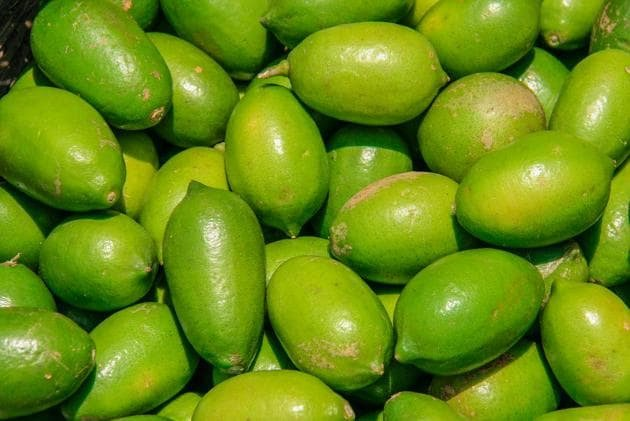

A semi-wild aromatic lime of the India–Bangladesh hill country, prized for a rind and leaf so fragrant they can carry a room. Grown for perfume, not pulp — and, remarkably, never yet distilled and characterised at origin.

The gondhoraj lebu — gondho-raj, literally “king of fragrance” — is a green, thick-skinned aromatic lime of Bengal and the surrounding hill country. Bengalis rank it above the ordinary lime the way a wine grower ranks a cru above a table grape: it is not simply sour, it is perfumed, with a scent potent enough to fill a kitchen from a single zested fruit.
What makes it valuable to an aroma house is exactly what its name promises. The fruit is prized for its intensely fragrant rind and its kaffir-like aromatic leaf far more than for its modest juice. That puts its worth in the volatile oils of peel and leaf — the two things a distiller can actually capture.
It is also a botanical hiding in plain sight: beloved in the kitchen, celebrated in craft gin, yet — as far as the published record goes — never properly distilled and GC-MS characterised at origin. That gap is precisely Raima’s opening.
Where agarwood is a base note, gondhoraj is a top note — fresh, sharp and diffusive, the kind of brightness that lifts and opens a composition. The signature is a sparkling green lime zest laid over kaffir-leaf and lemongrass facets, with a cool, quiet floral bloom running underneath that sets it apart from an ordinary lime.
It is a natural fit for citrus and cologne structures, gin and beverage flavour, and any brief that wants a living, green citrus rather than a flat “lemon.” The catch is tenacity: like all citrus, its top-note beauty is fleeting, which makes freshness at the still and careful handling decisive.
sparkling, sharply green, citric
kaffir-adjacent, tea-green
a cool, quiet floral trail
lemongrass, fresh, lifting
A citrus like the gondhoraj yields two quite distinct materials. The cold-pressed peel oil is dominated by the monoterpene limonene, carried by β-pinene, γ-terpinene and sabinene, with small but aroma-defining amounts of the lemony aldehyde citral (neral + geranial) and sweet esters. The leaf (petitgrain) oil tells a different story: far less limonene, and much more citronellal, citronellol and linalool — the same aldehyde-and-alcohol register that gives kaffir-lime leaf its character, which fits the gondhoraj’s famously aromatic foliage.
An honest caveat comes first: to our knowledge there is no published GC-MS of gondhoraj oil distilled at origin. The tables below are reference profiles from closely related citrus peel and leaf oils, shown so you can see the chemical shape we expect — not a measurement of gondhoraj itself.
| Compound | Class | Typical |
|---|---|---|
| Limonene | Monoterpene | ~48–95% |
| β-Pinene | Monoterpene | up to ~15% |
| γ-Terpinene | Monoterpene | variable |
| Sabinene | Monoterpene | minor |
| Citral (neral + geranial) | Aldehyde | minor · key odour |
| Neryl & geranyl acetate | Ester | trace–minor |
| β-Caryophyllene | Sesquiterpene | trace |
Reference ranges for lemon/lime cold-pressed peel oils [4]. Limonene sets the fresh citrus body; the small citral fraction carries much of the recognisable “lemon-lime” signal. Phytochemicals specifically reported for gondhoraj — β-pinene, limonene and β-caryophyllene — are consistent with this profile [2].
| Compound | Class | Note / role |
|---|---|---|
| Citronellal | Aldehyde | Signature kaffir/gondhoraj-leaf note; fresh, green, rosy |
| Citronellol | Alcohol | Soft, rosy citrus |
| Linalool | Alcohol | Floral, fresh |
| Sabinene | Monoterpene | Green-woody lift |
| Citral, nerol, geraniol | Aldehyde / alcohols | Lemony, floral facets |
| Limonene | Monoterpene | Present but lower than in peel |
Citrus leaf/petitgrain oils shift away from limonene toward citronellal, citronellol and linalool [4]; kaffir-lime leaf is the classic citronellal-rich reference for an aromatic-lime foliage of this kind. Exact proportions for gondhoraj leaf remain to be measured.
These are reference values from related citrus, clearly labelled as such — not gondhoraj data. We think the absence of a proper origin GC-MS for this famous fruit is a genuine white space, not a footnote.
Our founding work is to close it: cold-press the peel, steam-distil the leaf, and publish real chromatograms for gondhoraj oil, harvest window by harvest window. When we have them, they replace the tables above.
Everyone agrees the gondhoraj is a Citrus in the family Rutaceae. Past that, botanists disagree. It is most often tied to the Rangpur / Citrus × limonia group — a mandarin-and-lime hybrid lineage — while its intensely aromatic leaf reads as kaffir-adjacent (Citrus × hystrix), and at least one source files it under Citrus macroptera (a classification we treat with caution, as that name properly belongs to the satkora used in Sylheti beef curries, a different fruit).
We are not going to pretend to a certainty the science doesn’t have. The honest position is that the gondhoraj’s exact identity is unresolved — and that resolving it, with a documented chemical fingerprint and, in time, genetic work, is part of what it means to build a provenance house around this fruit rather than merely sell it.
Sources genuinely differ on how juicy the gondhoraj is — some describe it as “scarce in juice but not in fragrance,” while its aromatic juice is squeezed liberally across Bengali cooking and drinks. The safe, accurate framing, and the one we use: it is valued first and foremost for its fragrant rind and leaf, with a modest but intensely aromatic juice — not a “juiceless” fruit, but not a juice crop either.
In the kitchen the gondhoraj is a Bengali and Bangladeshi essential — its zest and leaf lift dal, fish, meat, chutneys and street food, and its juice defines drinks from gondhoraj ghol to modern cocktails. The craft-drinks world has taken note too: this aromatic-lime type is the lineage behind Rangpur-style gins.
Beyond flavour, it carries the usual citrus virtues — a good dose of vitamin C and the antioxidant and antimicrobial activity typical of citrus peel oils — and it appears in skin and wellness formulations for its fragrance and freshness. For an aroma house, the opportunity is to move it from the kitchen into fine fragrance and premium flavour as a documented, single-origin material.
The gondhoraj’s heartland is the hill country where India meets Bangladesh — Sylhet and the Chittagong hills, across Bengal, and into the Northeast Indian tracts that include Tripura. It has a reputation for growing poorly when taken far from this belt, which is part of the romance and, more usefully, part of the moat: a genuinely regional botanical is hard for a distant competitor to replicate.
That is the case for extracting it where it already belongs. Raima’s intent is to cultivate for oil, harvest in season, and distil peel and leaf within hours — turning a beloved local fruit into the first properly documented gondhoraj aroma material. This monograph will carry our own numbers as those lots come in.